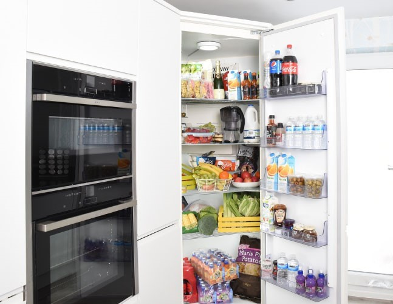

Ter uma vida saudável é, certamente, um desejo para todos nós e não é impossível. Com alguns ajustes na sua rotina diária e com a ajuda da FarmaCare será muito mais fácil ser mais feliz.
Combata O Stress Com A Alimentação
Os alimentos para combater o stress podem desempenhar um papel fundamental no tratamento deste problema, principalmente se inseridos numa dieta saudável. Uma boa alimentação é fundamental para a saúde e os alimentos para combater o stress, podem ser verdadeiros calmantes.Veja mais

A Importância da Maçã no Organismo
A maçã é das frutas mais cultivadas e consumidas em todo o mundo e é continuamente elogiada como um alimento fundamental. É também aquela peça de fruta que não deve faltar na alimentação de ninguém, pois os seus benefícios são imensos. Conheça-a melhor.Veja mais
Bebés – Opte pela chupeta ideal
Este é um tema fundamental para quem é mãe mas que sempre causa alguma controvérsia.
Ao sugar, o seu bebé procura satisfazer necessidades naturais de satisfação afetiva e de segurança. As questões surgem no que respeita à duração da fase oral da criança e ainda em relação à escolha do tipo produto mais adequado. Veja mais

Saiba como Relaxar todos os dias!
Está com demasiado trabalho, não consegue dormir ou sente-se stressado? Descubra técnicas de relaxamento que vão ajudá-lo a regressar à calma, onde quer que esteja. A rotina agitada, as exigências do quotidiano e a falta de tempo para descansar são cada vez mais uma realidade, abrindo a porta a alguns males da vida moderna como o stress e a ansiedade.Veja mais

Que Alimentos Devem Ficar de Fora do Frigorífico?
A maneira com que os alimentos são armazenados é um dos pontos que fazem toda diferença nas suas conservações. É muito comum achar que o simples fato de colocar um determinado alimento no frigorífico é garantia de prolongar sua vida útil.
Mas a verdade é que alguns itens precisam de ventilação e luz natural. No entanto, esse detalhe tão importante é algo que a grande maioria ignora.Veja mais
